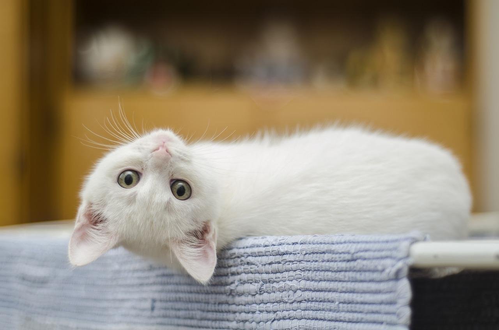
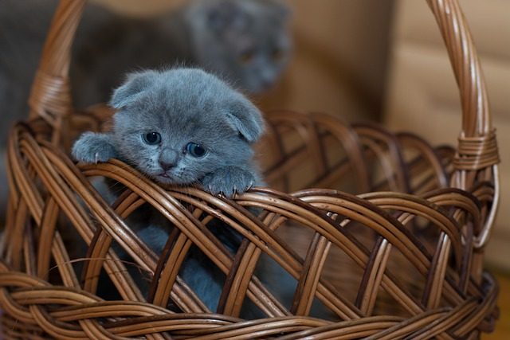
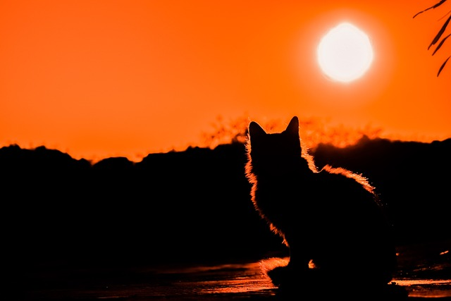
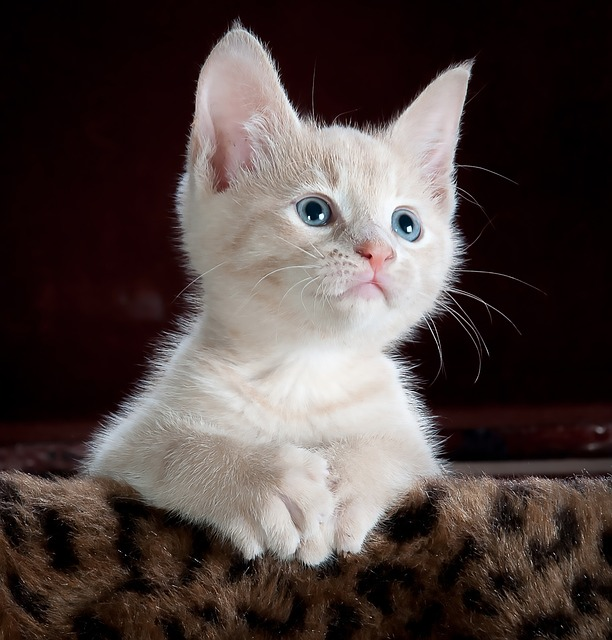
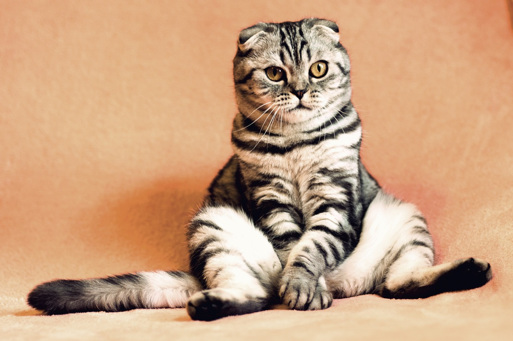

One of the most loved animals and an amazing pet. I love cats and their cute ears and shiny eyes attract everyone. Generally, all animals are cute but cats are super cute with some decent features. They are carnivores but they also eat banana, cheese, carrot, rice, milk and etc. They don't make much noise and need very less care. They are also called as a lazy animal because it sleeps most of the time. I have discussed some of the amazing facts about a cat and hope will help you. They are considered as the smallest member of a Felidae family. There are more than 30 animals belonging to this family. Some of them are Leopard, Lion, Tiger, Puma, Cheetah, etc. Cats are the smallest of this family and are also considered as a domestic animal.
Cat is a small and cute pet animal.
Cats have four legs and two sharp eyes.
They have furry skin which makes them soft.
Cats can be found in different colors.
Cat is a carnivorous animal that loves milk and fish.
Cat possesses strong hearing and smelling capability.
Cat can see in the dark and is a big foe of rats.
Children like to play with cats as they are cute.
Kittens are the small kids of cats.
We can find more than 55 breeds of cats in the world.
Cats are of different types, depending on their size and some physical qualities. They are more than 50 different types of cat breeds available.
A cat sleeps a lot and they sleep up to 12 to 20 hours a day. In their entire life, they spend 70% of their life sleeping.
It is found that Cats walk like camels and giraffes.
There is a cat with a tag of world's richest cat and its name is Blackie, It has a net worth of 12.5 million dollars.
The record for the longest cat ever is of 48.5 inches.
It was 1963 when a cat went to space for the first time.
Tiger, Lion, Leopard, etc belong to the same cat family.
A cat can easily hear the sound of 500 Hz to 32 kHz and can also detect a higher range of 55 Hz to 79,000 Hz.
Cats don't have sweet taste buds and it is very tough for them to detect a sweet taste. They have very fewer taste buds as compared to us. They are marked as the only animal with no sweet taste bud.
Although a cat looks so small it has 250 bones.
Their tail helps them to maintain balance while jumping here and there.
It is believed that cats use Mew to communicate with human beings.
Generally, cats don't have eyelashes.
A cat can live up to 16 years.
The ancient Egyptians worshipped cat in the form of a half-feline goddess named Bastet.
A breed naming Sphinx cats dont have fur.
A cat can jump up to 8 feet at a time.
Q.1 How many hours does a cat sleep in a day?
Ans. A cat sleeps for about 16-20 hours in a day.
Q.2 What is the scientific name of cat?
Ans. Felis catus is the scientific name of cat.
Q.3 How much high a cat can jump?
Ans. A cat can jump 5-6 times of their own height.
Q.4 Which plants are cats fond of?
Ans. Cats are most attracted with Catnip plant and therefore this plant is called as cat-pleasing plant.
Q.5 When is International Cat Day celebrated?
Ans. International Cat day is celebrated every year on 8th August.
Q.6 What is the color of eyes of new born kittens?
Ans. The color of the eyes of new born kittens is blue.